ВкусВилл
Сделала корзину не финальной точкой, а началом нового сценария добавления товаров. Проверила решение через юзабилити-тест
Проблема
Корзина в её текущем виде — тупик. Она отрезает пользователя от всего ассортимента в самый ответственный момент, создавая барьер для спонтанных и «забытых» покупок
Задача
Спроектировать изменения в интерфейсе корзины, которые позволят пользователю добавлять новые товары, не покидая экрана корзины
Screen flow
Рассмотрела весь путь пользователя: от выбора шаблона прошлого заказа до оплаты, уделяя особое внимание моменту, когда нужно добавить забытый или новый товар
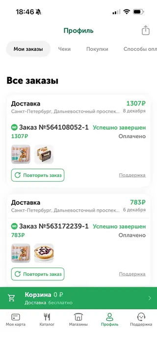
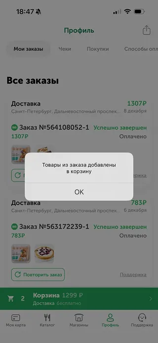
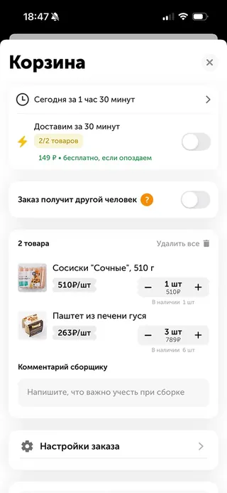
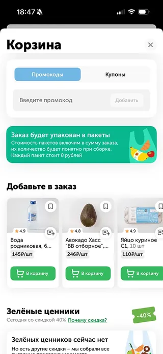
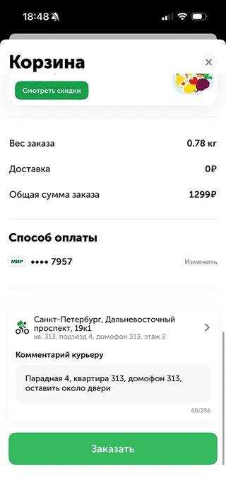
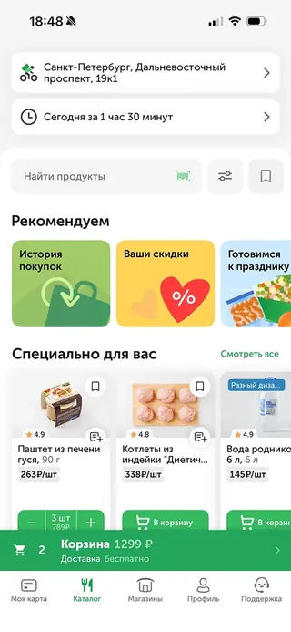
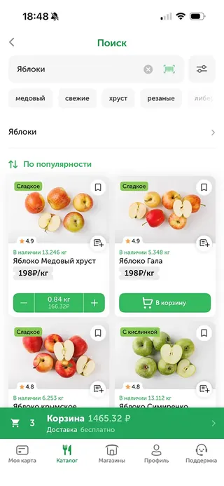
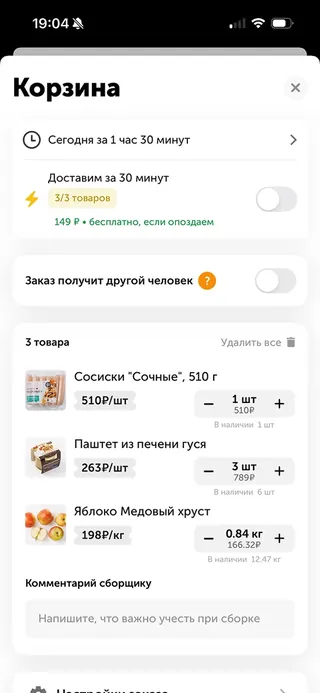
- 01Кнопка корзины на главном экране не ведёт в корзину, если в неё не добавлены продукты — вместо этого появляется информация о доставке
- 02При повторении прошлого заказа продукты добавляются в корзину, но корзина не открывается — нужно делать дополнительные шаги
- 03Из корзины нельзя быстро добавить забытый продукт — для этого нужно вернуться в каталог
Гипотезы
После аудита приложения сформулировала гипотезы, направленные на улучшение пользовательского взаимодействия
- H1Retention. Если сократить количество шагов в «Повторном заказе», это увеличит удержание: постоянные клиенты смогут оформлять привычные заказы быстрее и с меньшими усилиями
- H2Средний чек. Если разместить кнопку «Добавить продукты» на экране корзины, это увеличит средний чек (AOV): исчезнет главное препятствие для быстрого добавления забытых товаров и импульсных покупок
Опрос
Чтобы понять актуальность гипотез, провела опрос среди пользователей приложений доставки. Всего ответили 60 человек
Выводы
- 82% пользователей регулярно заказывают продукты на дом, поэтому в их корзинах, вероятно, часто встречаются товары из прошлых заказов;
- пользователю нужна возможность быстро добавить забытый товар — значит, лучше минимизировать количество шагов;
- «Повторить заказ» не основная функция для большинства — стоит упростить добавление товаров для всех сценариев;
- для бизнеса важно устранить барьеры: они влияют на средний чек и лояльность к приложению
Цель и критерий успеха
Свела вместе, что нужно пользователю и бизнесу, для кого делаем и как поймём, что получилось
Пользователь
Быстро добавлять забытый товар в корзину в процессе оформления заказа
Сэкономить время и когнитивную нагрузку
Бизнес
Повысить лояльность пользователей, улучшить пользовательский опыт
Повысить средний чек заказа
Аудитория
Пользователи, которые хотят сэкономить время при заказе
Те, кто регулярно заказывают доставку продуктов через приложение
Успех
Сокращение шагов при добавлении товара в корзину
Вовлечение в новую функцию минимум 15% пользователей
Анализ конкурентов
Посмотрела, как конкуренты в доставке продуктов решают вопрос быстрого добавления товаров в корзину — и решают ли вообще
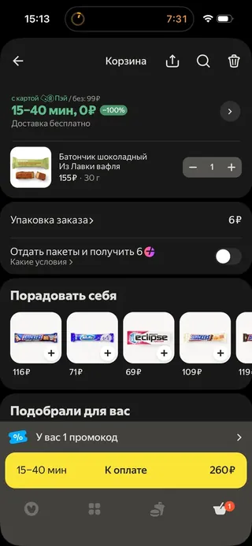
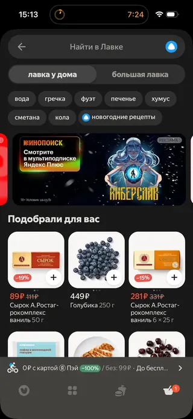
Яндекс Доставка
- В корзине есть «Поиск», открывающий страницу поиска по каталогу
- Есть чипсы с определёнными товарами (принцип выдачи не понятен)
- В корзине есть подборка «Подобрали для вас»
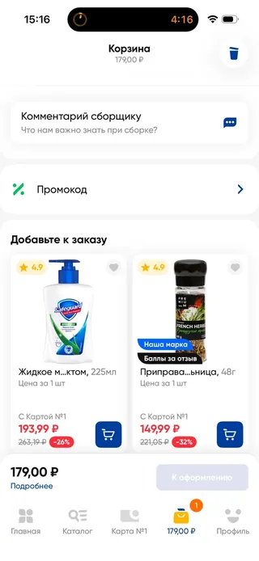
Лента
- В корзине нет способа быстро добавить товар
- Есть предложение «Добавить к заказу» с набором разных продуктов
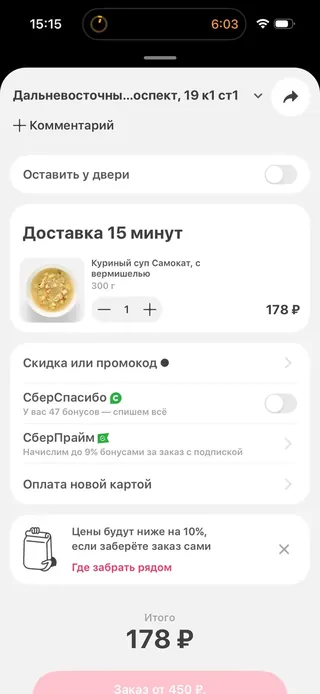
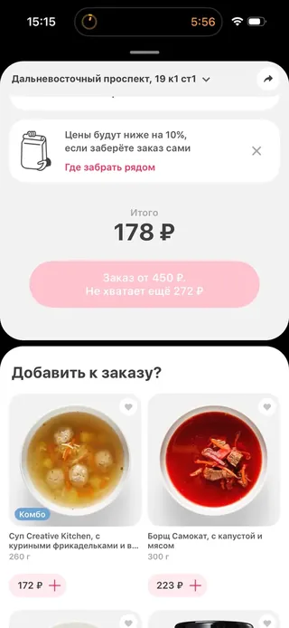
Самокат
- В корзине нет способа быстро добавить товар
- Есть предложение «Добавить к заказу» с набором разных продуктов
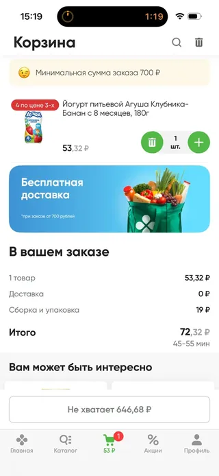
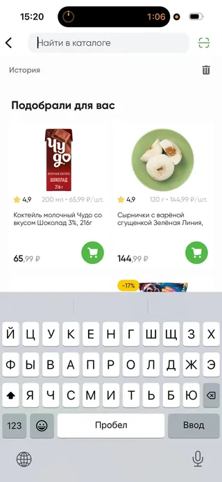
Перекрёсток
- В корзине есть «Поиск», открывающий страницу поиска по каталогу
- В поиске нет рекомендаций по предпочтениям или прошлым заказам
- В корзине есть подборка «Вам может быть интересно»
Во всех приложениях уже есть подборки вроде «Возможно, вам также понадобится»: они строятся на истории заказов и хорошо решают задачу бизнеса — увеличить средний чек.
Вывод
- возможность быстро добавить конкретный, заранее известный товар есть не везде — а опрос показал, что она важна для пользователей
Решение и макеты
Изменения направлены на сценарий, когда пользователь уже в корзине, — поэтому начала именно с этого этапа
Повторный заказ
Путь к повторному заказу через «Профиль» уже достаточно короткий, поэтому я его сохранила, но поменяла одно ключевое место в логике.
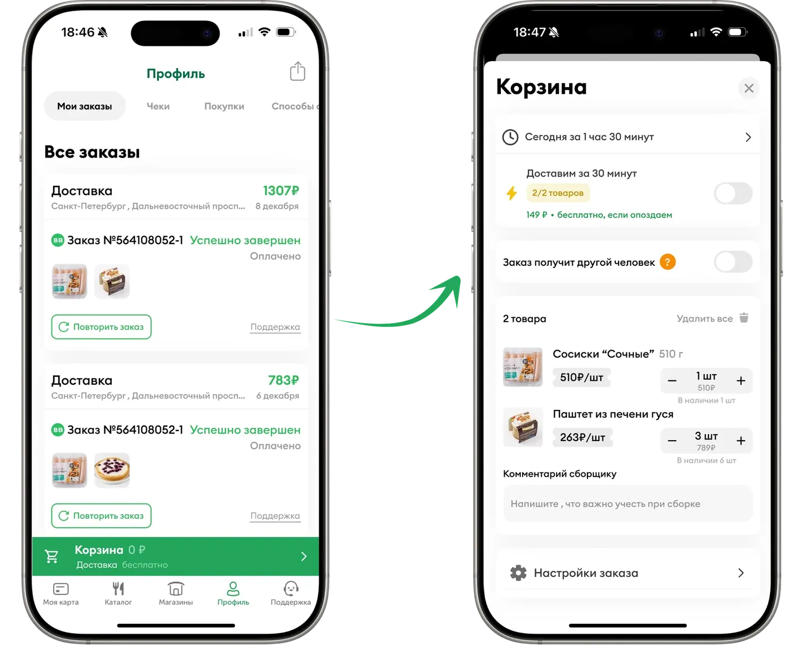
было
Товары добавлялись в корзину, но пользователь оставался на странице профиля — непонятно, повторился ли заказ.
стало
Товары моментально добавляются в корзину, а пользователь попадает на страницу корзины для подтверждения и оформления.
Где разместить «Добавить товары»
Рассмотрела несколько вариантов размещения кнопки в корзине.
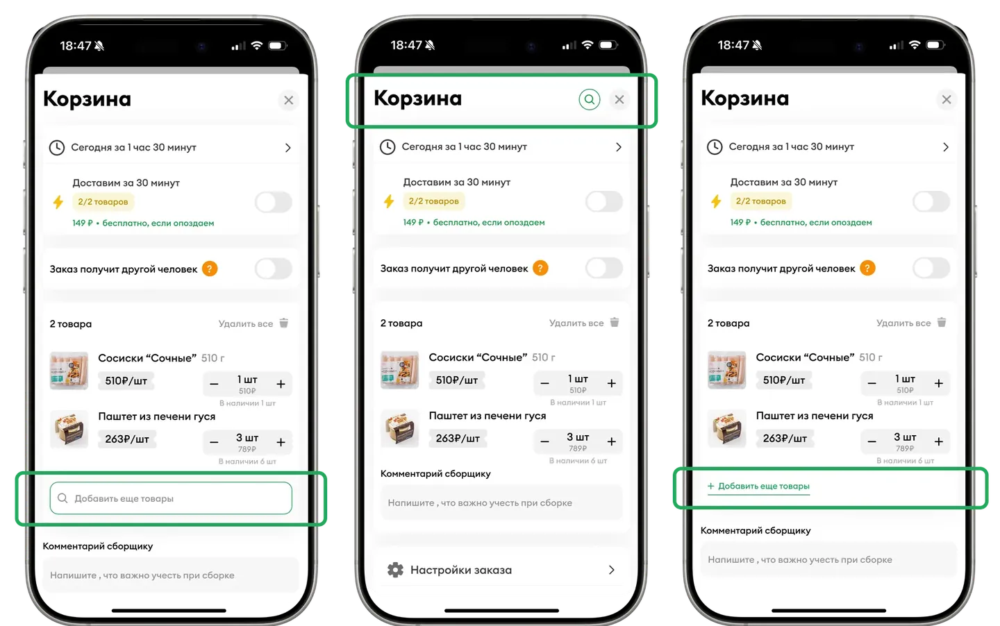
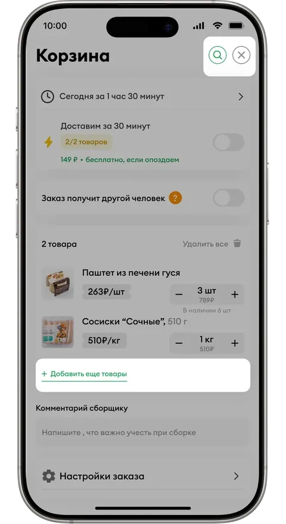
Для юзабилити-теста
Оставила два варианта, чтобы понять, какой из них пользователь замечает лучше.
А ещё — пустая корзина
В текущем приложении в корзину нельзя попасть, не добавив туда хотя бы один товар, поэтому я нарисовала пустую корзину.
Здесь пользователь впервые видит кнопку «Добавить продукты в корзину» — это ещё одна точка входа в каталог. Тест должен был показать, насколько она заметна.
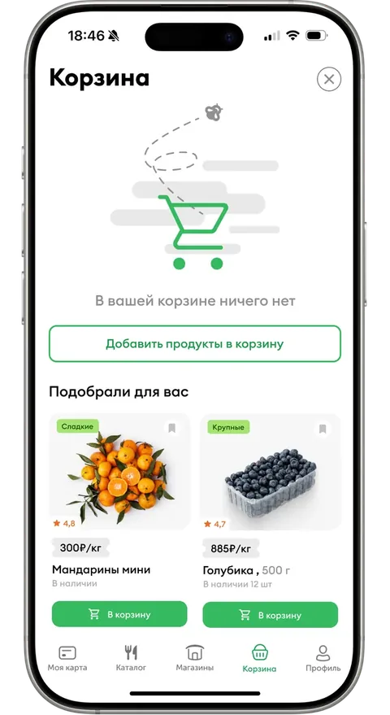
Как попасть в каталог
Помимо самой корзины продумала путь к каталогу — сценарии, которые заложила в макеты.
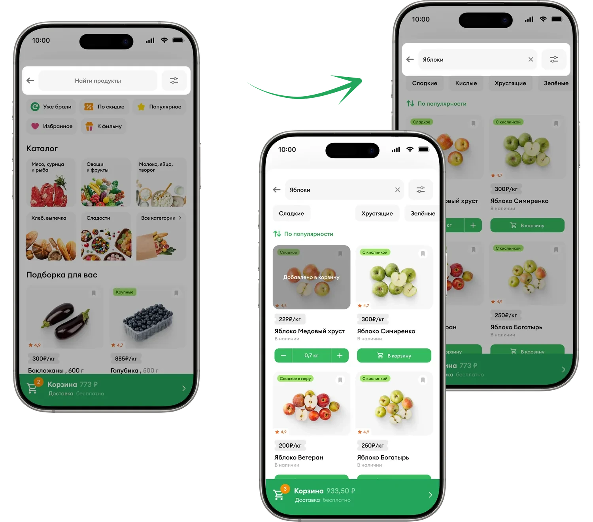
Привычнаяпоисковая строка
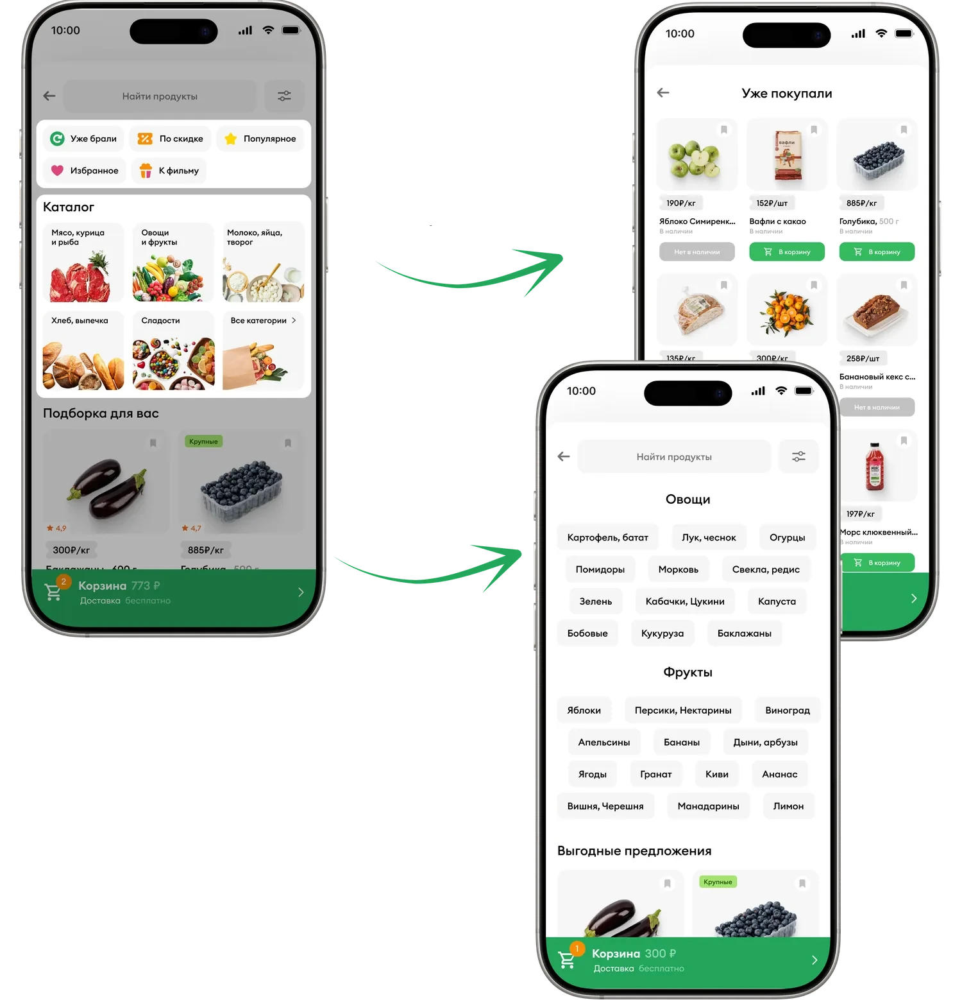
Подборки длябыстрого поиска Поиск
по разделам
каталога
Юзабилити-тест
Собрала прототип и легенду, по которой пользователь проходил новый флоу. В тесте участвовали 6 человек — запись можно посмотреть тут
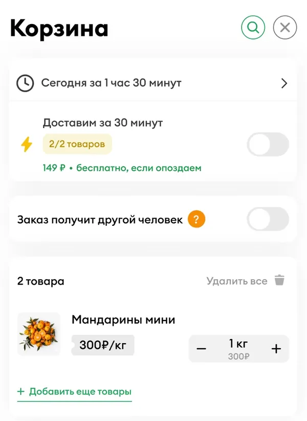
сработало
Кнопку «Добавить ещё товары» заметили и использовали все участники (100%)
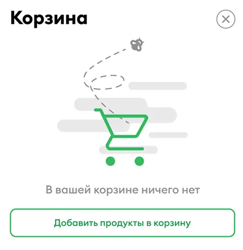
сработало
Сценарий быстрого добавления подтвердился: 4 из 6 (66,6%) сразу заметили целевую кнопку в пустой корзине
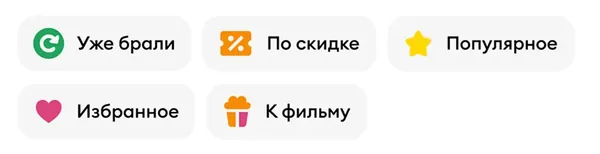
сработало
«Уже брали» оказалась полезной: две трети (66,6%) добавили через неё товары из истории заказов
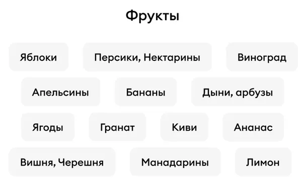
сработало
Категории каталога понятны всем, а 5 из 6 сами применяли быстрые фильтры, чтобы уточнить поиск
не сработало
Иконку корзины в панели навигации игнорировали — в корзину шли привычным путём
не сработало
Значок поиска (лупа) в шапке корзины почти не заметили — ни разу не воспользовались спонтанно
Прогноз эффективности
Это не измеренный результат, а направление эффекта: как изменения должны повлиять на ключевые метрики, исходя из логики самих решений
Retention
лояльность и удержание
эффект
Меньше шагов и точек фрустрации в ключевом сценарии — сервис удобнее, пользователь вернётся снова
AOV
средний чек
эффект
Убран барьер для забытых и импульсных товаров — в корзине больше позиций и выше сумма заказа
LTV
долгосрочная ценность
эффект
Рост Retention и AOV вместе повышают долгосрочную ценность каждого клиента